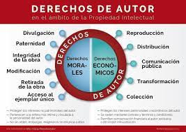

1 Concepto de propiedad intelectual:”:
1-1 Concepto de propiedad intelectual::
Propiedad intelectual
La propiedad intelectual es el conjunto de derechos que corresponden a los autores
y a otros titulares (artistas, productores, organismos de radiodifusión...) respecto
de las obras y prestaciones fruto de su creación.
2 -Derechos morales
2-1 Concepto de derechos morales:
Derechos morales
Los derechos morales son aquel derecho personal del autor, que tiene como característica que es
irrenunciable
y que no se puede transferir a otras personas,con finalidad de proteger a la persona del autor a
través de su obra.

Son aquellos derechos que permiten a su titular autorizar o prohibir los actos de la explotación de
su obra o prestación protegida
por el usuario y exigir una remuneración a cambio de la autorización que le conceda.
No dan autoridad a su titular a autorizar o prohibir los actos de explotación de su obra
o prestación protegida por el usuario, si aunque se le obliga a este el pago de una cantidad
de dinero por los actos de explotación que realice, la cantidad de dinero viene impuesta por la ley
o por las tarifas generales de las entidades de gestión.
el derecho por copia privada que compensa los derechos de propiedad intelectual
dejados de percibir por razón de las reproducciones de las obras o
prestaciones protegidas para uso exclusivamente privado del copista
3 -Derechos de autor y copyright:
3-1 Concepto de derechos de autor y copyright:
Concepto de derechos de autor y copyright
es una expresión de origen inglés cuyo significado es equivalente a derechos de autor. Se traduce,
literalmente, como ‘derechos de copia’.
Se refiere, por lo tanto, a los derechos que protegen la propiedad intelectual (artística o
literaria), de un autor sobre la obra que ha creado.
La condición de protección sobre una obra intelectual se expresa mediante el símbolo “©”.

4 -Licencias de software:
4-1 Concepto de licencia de software:
Concepto de licencia de software
La licencia de software es la autorización que otorga un autor o autores que permite el derecho a
terceras personas de utilizar su creación o recurso.
El autor tiene el derecho intelectual exclusivo y lo concede a otros como un permiso, en este caso
una licencia de software